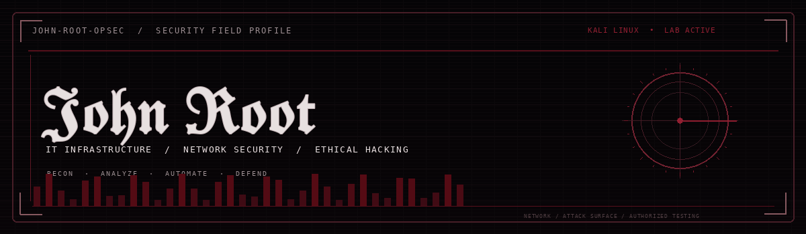
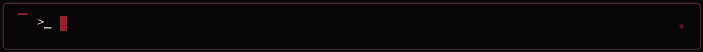
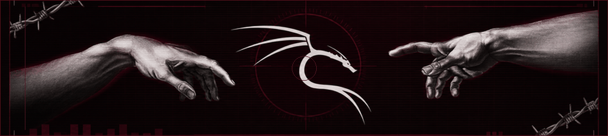
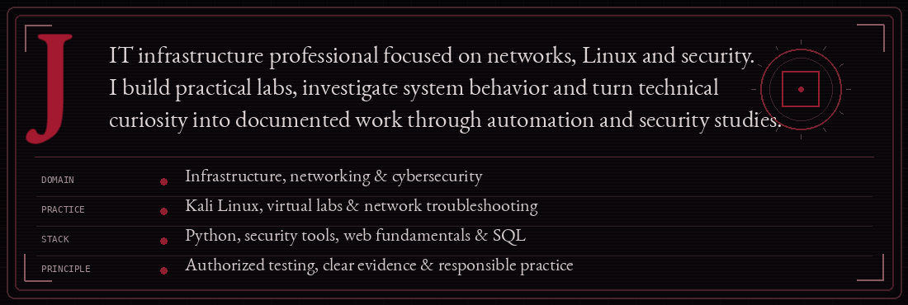
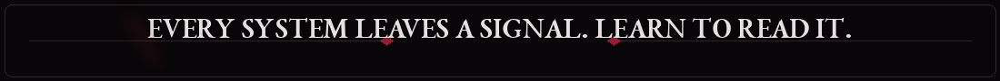
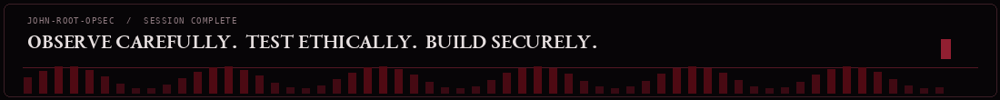

OFFENSIVE SECURITY / AUTHORIZED LABS
NETWORK ANALYSIS & DEFENSE
TCP/IP VLANs ACLs DHCP DNS GLPI Active Directory
SYSTEMS, VIRTUALIZATION & DEVELOPMENT
Kali Linux Linux Windows VirtualBox Cisco Packet Tracer Python JavaScript TypeScript React SQLite REST APIs OAuth 2.0
| PROJECT | OPERATION NOTES |
|---|---|
| Enterprise Network Defense | Corporate network design · VLANs · routing · ACLs · DHCP · DNS |
| Gmail Automation | Python · Gmail API · OAuth 2.0 · REST · pagination · batch processing |
| WebSec Lab | Controlled web security lab · HTTP analysis · Python detection concepts · In development |
COMPLETED · Systems Analysis and Development degree
COMPLETED · AI-900 — Microsoft Azure AI Fundamentals
CURRENT TRACK · Linux administration · networking · authorized ethical hacking labs · defensive security · Python automation · front-end development
Open to junior opportunities in IT Infrastructure, Networking, IT Support and Cybersecurity.
All security testing is limited to systems and environments where I have permission.

Credits & implementation notes
Animated panels are original looping GIF assets generated for this profile. Technology icons: Skill Icons. Badges: Shields.io. Display typography uses a Fraktur Unicode treatment and Garamond-style editorial lettering in the raster artwork.